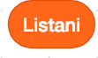
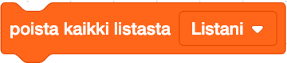

Lista
Lista on työkalu, jolla voi varastoida suuren määrän informaatiota kerralla. Se voidaan määritellä muuttujaksi, jossa on toisia muuttujia sisällään. Lista koostuu numero-kohde pareista. Jokaisen kohteeseen pääsee numeron avulla. Scratchin Lista-palikat löytyvät Muuttujat-valikosta.
Esimerkkejä listasta Scratchissä
Mene Muuttujat valikkoon ja napauta "Tee lista".
Anna listalle nimi ja valitse onko se vain tälle hahmolle vai kaikille hahmoille.
Nyt lista-palikat ovat näkyvillä editorissa ja tyhjä lista näyttämöllä.
Tämä palikka kertoo listan kohteet.
Tämä palikka lisää kohteen listan loppuun.
Tämä palikka poistaa kaikki kohteet listasta.
Tämä palikka asettaa kohteen tiettyyn paikkaan listassa.
Näiden lisäksi löytyy vielä monta muuta hyödyllistä palikkaa listan kohteiden käsittelyä varten.